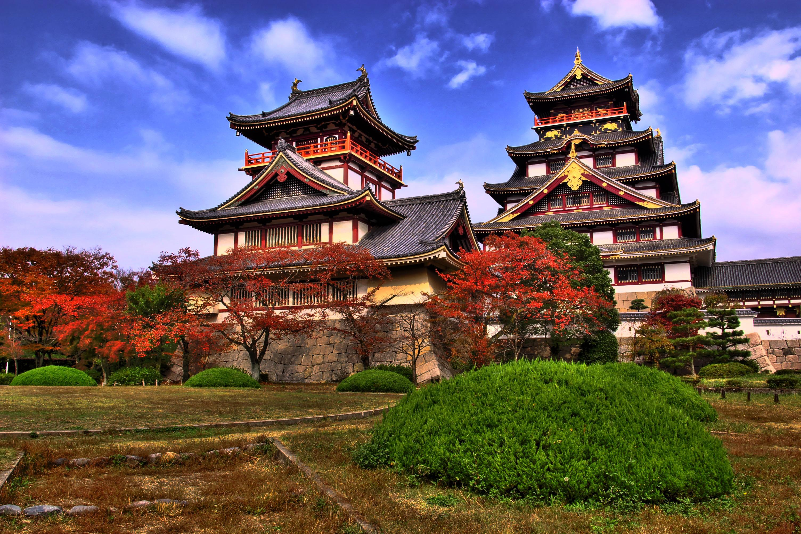

Arashiyama
Arashiyama, em Kyoto, é um refúgio pitoresco famoso por suas paisagens naturais e atrações culturais. A deslumbrante Floresta de Bambu é um destaque, com trilhas que serpenteiam entre altos bambus, criando uma atmosfera mágica. A icônica Ponte Togetsukyo oferece vistas panorâmicas do rio Katsura e das montanhas circundantes, tornando-se um ponto perfeito para fotografias. O Templo Tenryu-ji, um importante templo Zen, encanta os visitantes com seus jardins paisagísticos e vistas deslumbrantes do Monte Arashiyama. O Parque dos Macacos de Iwatayama permite a interação com macacos japoneses em seu habitat natural, além de oferecer vistas panorâmicas de Kyoto. Arashiyama combina tranquilidade, beleza natural e rica herança cultural, tornando-se um destino imperdível para quem visita Kyoto.
Kita
A região de Kamigyo, em Kyoto, é um tesouro histórico que encapsula a antiga capital do Japão com elegância e charme. No coração de Kamigyo encontra-se o majestoso Palácio Imperial de Kyoto, um símbolo de grandeza e tradição imperial. Seus vastos jardins e estruturas refinadas oferecem uma visão única da vida da corte imperial japonesa. Além do palácio, Kamigyo abriga o renomado Santuário Kitano Tenmangu, dedicado ao deus da sabedoria e dos estudos, que atrai estudantes e visitantes com seus festivais vibrantes e belas flores de ameixa. A área também é conhecida por suas tradicionais machiyas (casas de madeira) e ruas históricas, como a Rua Nishijin, famosa por sua produção de tecidos de seda Nishijin-ori. Passear por Kamigyo é uma jornada através do tempo, onde a herança cultural de Kyoto se desdobra em cada esquina, proporcionando uma experiência rica e inesquecível.


Kamigyo
A região de Kamigyo, em Kyoto, é um tesouro histórico que encapsula a antiga capital do Japão com elegância e charme. No coração de Kamigyo encontra-se o majestoso Palácio Imperial de Kyoto, um símbolo de grandeza e tradição imperial. Seus vastos jardins e estruturas refinadas oferecem uma visão única da vida da corte imperial japonesa. Além do palácio, Kamigyo abriga o renomado Santuário Kitano Tenmangu, dedicado ao deus da sabedoria e dos estudos, que atrai estudantes e visitantes com seus festivais vibrantes e belas flores de ameixa. A área também é conhecida por suas tradicionais machiyas (casas de madeira) e ruas históricas, como a Rua Nishijin, famosa por sua produção de tecidos de seda Nishijin-ori. Passear por Kamigyo é uma jornada através do tempo, onde a herança cultural de Kyoto se desdobra em cada esquina, proporcionando uma experiência rica e inesquecível.
Nakagyo
Nakagyō, no coração de Tóquio, é uma região que harmoniza a modernidade pulsante com traços históricos da capital japonesa. Este distrito central é famoso por abrigar o imponente Castelo de Nijo, uma estrutura que exala a grandiosidade do período Edo com seus elaborados jardins e interiores artisticamente decorados. O Mercado Nishiki, também conhecido como a "Cozinha de Kyoto", oferece uma experiência gastronômica vibrante, com suas diversas barracas de comida tradicional e ingredientes frescos. Nakagyō também é lar de inúmeras machiyas, antigas casas de madeira que hoje abrigam boutiques elegantes e cafés charmosos, mantendo viva a essência histórica da região. Passear por Nakagyō é imergir em uma fusão fascinante de passado e presente, onde cada rua e edifício conta uma parte da rica história de Tóquio.


Shimogyo
Shimogyo, em Kyoto, é um centro urbano que combina a modernidade com a rica história da cidade. No coração de Shimogyo está a movimentada Estação de Kyoto, uma obra-prima arquitetônica que serve como um importante hub de transporte e um destino por si só, com lojas, restaurantes e um terraço com vista panorâmica da cidade. Próximo à estação, encontra-se o Templo Higashi Honganji, um dos maiores templos de Kyoto, conhecido por sua imponente estrutura e importância espiritual. Shimogyo também oferece a animada Shijo Street, repleta de lojas, boutiques e grandes departamentos. Explorando Shimogyo, os visitantes podem experimentar a perfeita fusão de tradição e modernidade que torna Kyoto um destino tão cativante.
Kurama
Kurama, em Kyoto, é uma região conhecida por seu ambiente natural sereno e pelo templo Kurama-dera, um local espiritual e histórico. Situado nas montanhas ao norte de Kyoto, Kurama-dera oferece vistas panorâmicas e um ambiente tranquilo, perfeito para meditação e reflexão. Para os amantes da natureza, a trilha de Kurama a Kibune é uma caminhada popular, proporcionando uma experiência imersiva nas florestas densas e nas paisagens montanhosas. A tranquilidade e beleza de Kurama fazem dela um destino imperdível para quem busca uma fuga do agito urbano de Kyoto e deseja explorar a espiritualidade e a natureza da região.
Sakyō
A região de Sakyō, em Kyoto, é um destino encantador que combina beleza natural e tesouros culturais. Lar do majestoso Templo Ginkaku-ji, também conhecido como Pavilhão Prateado, Sakyo atrai visitantes com seus belos jardins de areia e paisagens serenas que refletem a filosofia zen. O Caminho do Filósofo, uma trilha pitoresca ladeada por cerejeiras que florescem na primavera, oferece um passeio tranquilo e contemplativo ao longo do canal. Além disso, Sakyo é conhecida por suas numerosas vilas históricas,que revelam a grandiosidade da arquitetura e dos jardins japoneses. Explorar Sakyo é mergulhar em um mundo de tranquilidade e beleza, onde cada esquina revela um novo aspecto da rica herança cultural de Kyoto.
Higashiyama
Higashiyama, em Kyoto, é um distrito histórico e culturalmente rico, famoso por suas ruas pitorescas, templos e santuários antigos. Este bairro é um dos melhores lugares para experimentar a essência do antigo Japão, com suas tradicionais casas de madeira e becos estreitos que remontam ao período Heian. Entre as atrações mais notáveis estão o Templo Kiyomizu-dera, um Patrimônio Mundial da UNESCO conhecido por sua varanda de madeira que oferece vistas deslumbrantes da cidade, e o Santuário Yasaka, que desempenha um papel central no famoso festival Gion Matsuri. Outras atrações incluem a charmosa rua Ninenzaka, cheia de lojas de lembranças e casas de chá, e o Parque Maruyama, um dos melhores lugares para ver as flores de cerejeira na primavera. Higashiyama-ku é um local onde o passado e o presente se encontram, proporcionando uma experiência inesquecível para os visitantes.
Fushimi
A região de Fushimi, em Kyoto, é amplamente conhecida por seu famoso santuário Fushimi Inari Taisha, um dos destinos mais icônicos do Japão. Este santuário, dedicado ao deus Inari, atrai visitantes de todo o mundo com seus milhares de portões torii vermelhos que formam trilhas sinuosas através das colinas arborizadas. Além de seu esplendor religioso e natural, Fushimi também é renomada por sua histórica indústria de saquê. A área é repleta de antigas cervejarias, algumas das quais oferecem tours e degustações, proporcionando uma visão fascinante da tradicional produção de saquê japonês. Caminhar pelas charmosas ruas de Fushimi, explorar seus santuários menores e desfrutar das delícias locais faz desta região um lugar imperdível para quem visita Kyoto.
Uji
Uji
Mais